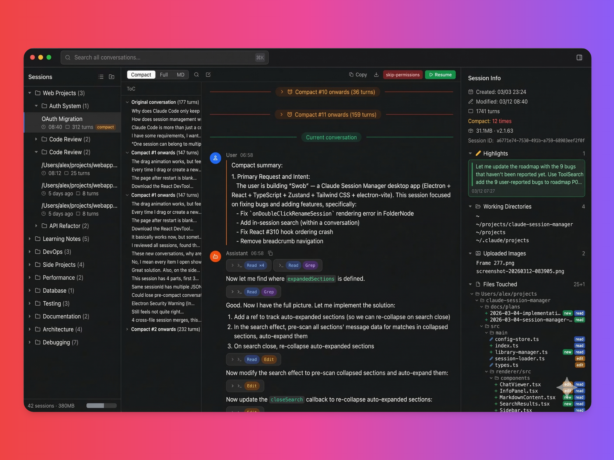

02 · CORE CONCEPT
复活与备份
备份回答“内容还在吗”，复活回答“能否安全写回原客户端并继续”。两者不是同一件事。

恢复链路
Vault 备份校验 ID / JSONL / SHA-256选择可信目标实例冲突与锁检查原子发布并复核
保守失败是功能
目标目录不可信、清单缺失、同 ID 冲突或备份未验证时，Swob 会停下来，而不是“尽量写进去”。完整失败原因见恢复失败原因表。
备份可读 ≠ 可直接 Resume
恢复有效性还依赖来源、物理 session ID、目标客户端实例和写回后的验证。